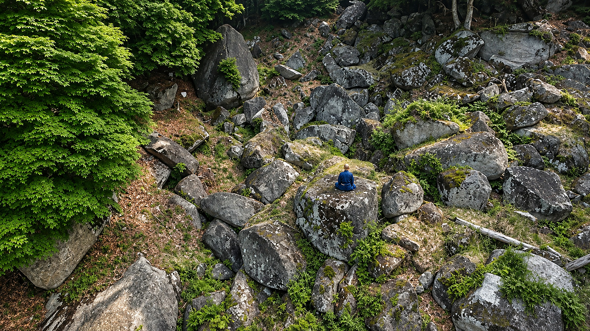
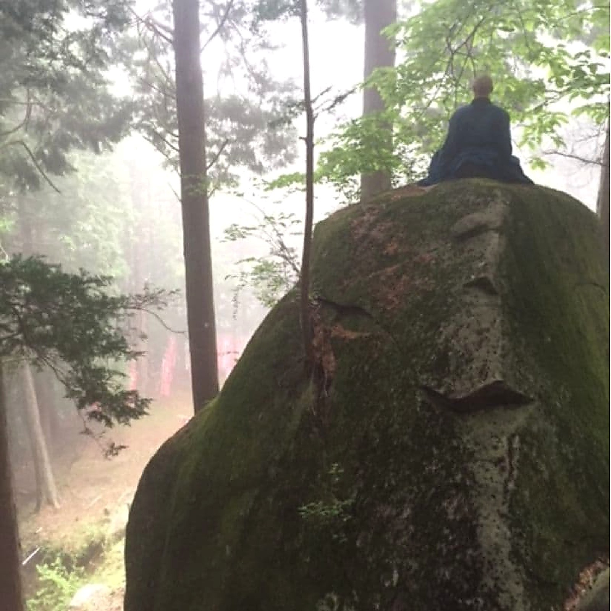
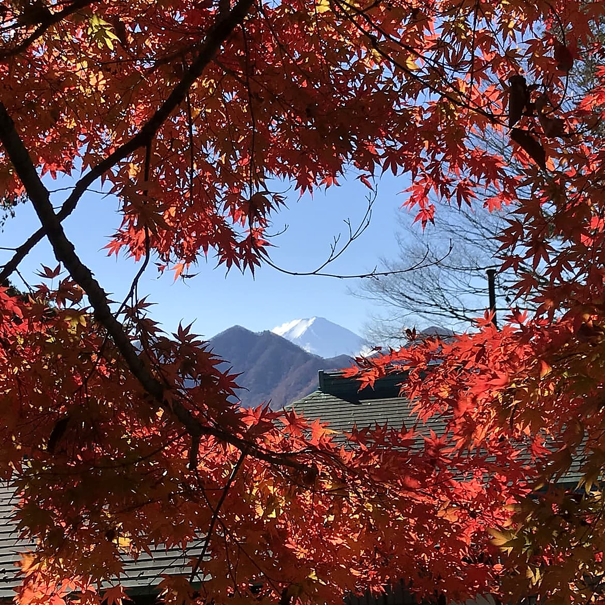
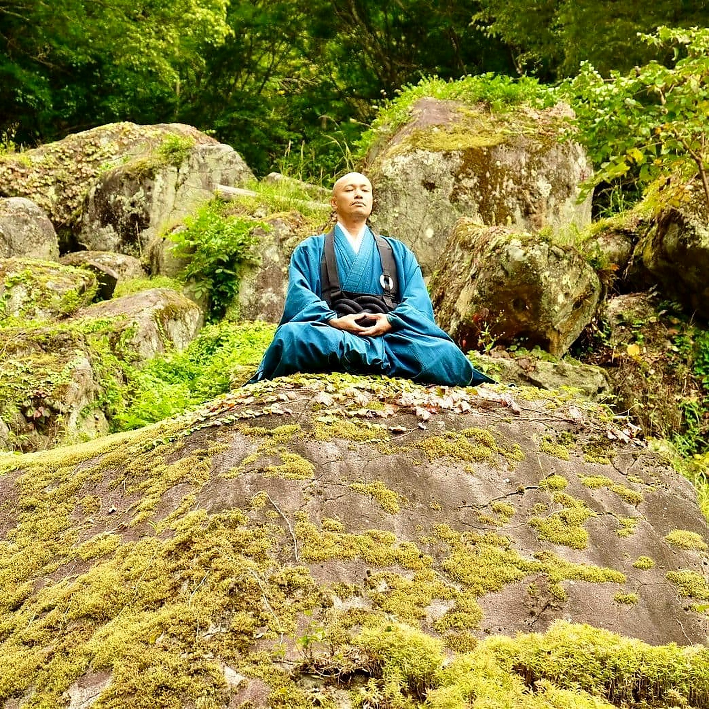
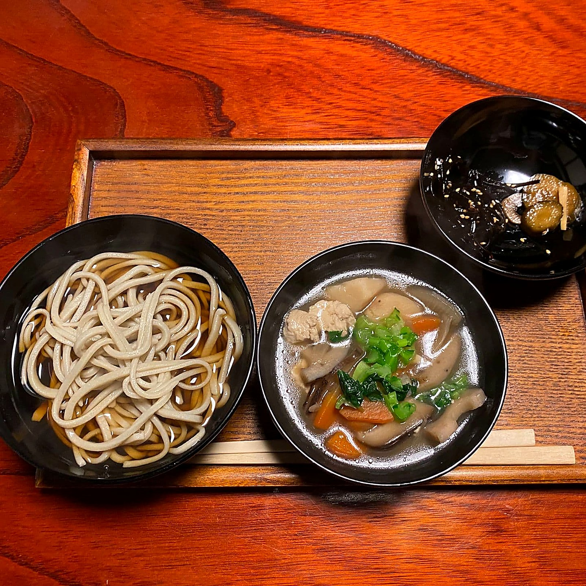
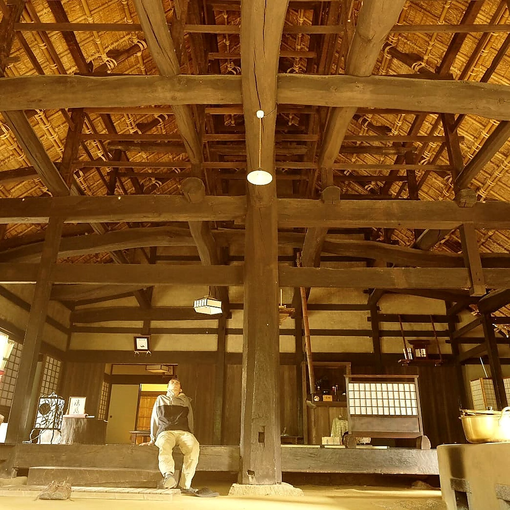

春はる
石の観音の上に、しだれ桜が咲きます。標高がありますので、里より二週間ほど遅れて咲きます。
この季節の行事三月、蕎麦の種をまき、住職が十割を打ちます。四月中旬の日曜には摩利支天大祭、御厨子を開きます。
てんもくさん せいうんじ
坐 禅 の 聖 地 ®

貞和四年（1348）開山 臨済宗建長寺派 天目山栖雲寺
宝物館は現在、拝観を中止しております。禅庭（石庭）は毎日ご拝観いただけます。 詳しくはこちら
貼り付け用/ にそのまま残してあります。
Spring · Summer · Autumn · Winter
石の観音の上に、しだれ桜が咲きます。標高がありますので、里より二週間ほど遅れて咲きます。
この季節の行事三月、蕎麦の種をまき、住職が十割を打ちます。四月中旬の日曜には摩利支天大祭、御厨子を開きます。

岩に苔が回り、斜面がひといろの緑になります。里が暑い日でも、ここは涼しい。外で一時間坐るには、いちばん良い季節です。
この季節の行事五月末に緑陰の茶会、六月第一日曜に天目山茶会。七月二十七日は開山忌です。

紅葉の向こうに富士が立ちます。冷えた朝ほど、よく見えます。駅から歩く竜門峡の道が、いちばん美しい時期です。
この季節の行事十一月七日・八日は蕎麦まつりと宝物風入れ展。年に一度、蔵を開けて宝物に風を通す日です。マニ像の御朱印もこの二日だけ。

岩に雪が積もり、斜面が静かになります。坐ることは止みません。人がほとんど来ません。それが、冬に来る理由です。
この季節の行事十二月、大菩薩峠で坐ります。なお季節運行の山バスは十二月中旬から四月中旬まで走りません。市民バスは通年です。
禅庭は、一年のどの日も開いております。
日を選べるのでしたら、どうぞ静かな月をお選びください。
Upcoming
9時30分受付／6,000円／定員15名。
【受付状況をここに記載してください】
16時受付／15,000円／定員15名。寺泊は定員に達しております。
9時〜15時／志納金1,000円。年に一度、蔵を開けて宝物に風を通します。住職の宝物解説は両日12時〜12時30分。
About Seiunji

堂宇を先に建てた寺ではありません。貞和四年（1348）、業海本浄が岩の広がる山肌そのものを道場としました。だから今も、岩の上で坐ります。禅庭は山梨県指定の名勝です。

寺伝によれば、開山が中国・杭州の天目山で学んだ製麺の技を、この山に伝えました。尾張藩士・天野信景の随筆『塩尻』にも、蕎麦切りが甲州の天目山に始まるという記述があります。

武田信満公の菩提寺です。天正十年、勝頼公は天目山を目指して落ち、田野で自害されました。いま建つ庫裏は、文禄元年（1592）に再建されたものです。
News
令和8年11月7日(土)〜8日(日)の2日間。地元の蕎麦屋から蕎麦切りを御奉納いただき、無病息災の御祈祷とふるまいをいたします。
9月・10月とも空席が残り僅かとなり、寺泊は定員に達しております。足を組めない方にはイス坐禅の用意もございます。